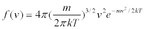

The Kac model simulates the relaxation of a gas to equilibrium by randomly selecting and then colliding gas molecules but without keeping track of the molecules' positions. As long as the collisions are consistent with spatial isotropy, the Boltzmann speed distribution f (v) will emerge.

where v = (vx2 + vy2 + vz2)1/2 and T is the temperature. The Boltzmann constant k and the molecular mass m are set equal to unity in this simulation.
This simulation was created by Wolfgang Christian using the Easy Java Simulations (Ejs) modeling tool. It is based on an Open Source Physics Java program by Dan Schroeder. You can modify this simulation if you have Ejs installed by right-clicking within a plot and selecting "Open Ejs Model" from the pop-up menu. Information about Ejs is available at: <http://www.um.es/fem/Ejs/>.